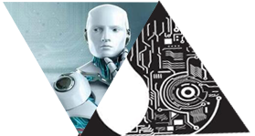

-
智能+前景
随着机器学习的快速发展，人工智能产业在历经60年的起伏之后，如今已经在全球范围形成新一轮的抢位发展态势，发达国家纷纷吹响探索大脑奥秘的号角。中国的人工智能产业在全球浪潮推动下，也在快速发展。赛迪顾问针对人工智能产业的大浪潮，提出了人工智能产业概念界定，并对产业链进行了深度剖析。对全球和中国人工智能市场规模和结构进行了判断，并详细梳理了全国各省市在人工智能领域的利好政策和具体举措。结合产业发展态势和技术热点演进，分析了各个细分领域的投资价值热点，提出深度学习、机器视觉、服务机器人、智能无人设备将是最具投资价值的四个方向。 在“一带一路”中运用人工智能，将会大大减少人力物力的投入，将中国科技强盛的一面展示给全世界看。

-
智能 +应用
在今天人工智能截高速发展的今天，如何让人工智能相关技术服务到一带一路的建设上，是一个重要的论题。一带一路涉及到世界上多个国家和地区，不同国家和地区的人相互沟通，必要少不了通过语言这一手段，而不同国家的语言均不尽相同。所以，解决语言沟通是首要问题，而人工智能技术的帮助，恰恰可以很好地解决这一问题。中国国际商会合作发展部部长韩梅青作《“一带一路”与语言服务的机遇和挑战》中提出：融合在翻译血液中的是让世界了解、喜欢中国和中国人，同时也让中国人了解、喜欢外国和外国人。人工智能语言服务，重点是智能机器翻译。目前，有很多企业已经推出结合机器翻译和译后编辑生产出精确度较高的可靠译文的服务。这种语言服务利用大数据、自动语音识别和深度神经网络等技术，帮助不同语言的人实现自然流畅的语言交流。

-
智能 +热点
2017年5月14日，北京再次迎来盛会，29个国家首脑出席，来自110个国家的各界人士参会，举世关注。 国家主席习近平在“一带一路”国际合作高峰论坛开幕式上发表主旨演讲时强调，要将“一带一路”建成创新之路，创新是推动发展的重要力量。要坚持创新驱动发展，加强在数字经济、人工智能、纳米技术、量子计算机等前沿领域合作，推动大数据、云计算、智慧城市建设，连接成21世纪的数字丝绸之路。
在本世纪20年代中期，人工智能，机器人和自动化将在快餐业取代人类..采用人工智能机器人来取缔。而不止国外如此，在国内现在人工智能的理解也逐步纵深化，国内三大大巨头百度，腾讯，阿里巴巴都把人工智能的研究和开发放在极为重要的位置，力求占据未来的人工智能制高点，谁掌握最前端的技术，谁在未来就能把对手远远抛离